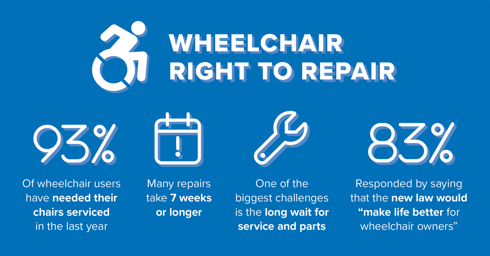

Laws
The Right to Repair movement is a growing movement that advocates for the right of consumers to repair their own devices and equipment. This movement has gained traction in recent years, as more and more people are frustrated with the limitations placed on them by manufacturers. In response to this demand, some states have begun to pass laws that support the Right to Repair. These laws vary from state to state, but they generally aim to make it easier for consumers to access repair information and parts, and to hold manufacturers accountable for their repair practices.
Minnesota for example has passed a law that in in currently in effect. The Digital Fair Repair Act, passed in May 2023 and in effect as of July 1, 2024, requires manufacturers to provide consumers and independent repair shops with access to the same repair information and parts that they provide to their own authorized repair facilities. This law is a significant step forward for the Right to Repair movement, as it will help to level the playing field between consumers and manufacturers.
Colorado has also passed a law that is currently in effect. This law first targeted the repair of powered wheelcahirs,
but has exapnded to include farming equipment. The law requires manufacturers to provide repair information and parts to
consumers and independent repair shops, and it also prohibits manufacturers from using software locks to prevent repairs.
With a 20,000 fine for each violation, this law is a significant step forward for the Right to Repair movement.


{kind=link}
{kind=link}
{kind=link}